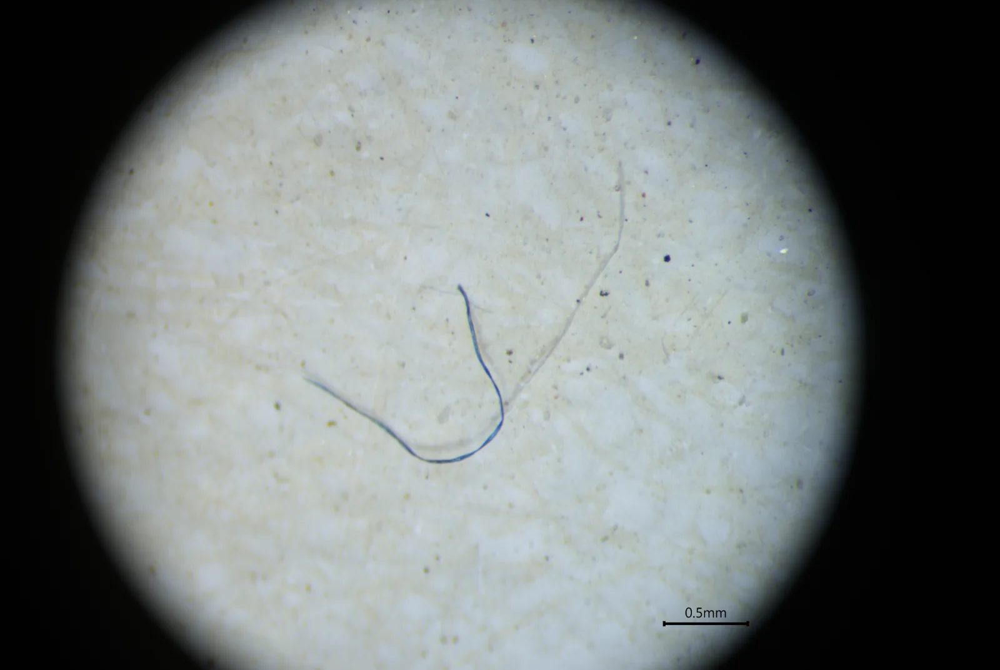
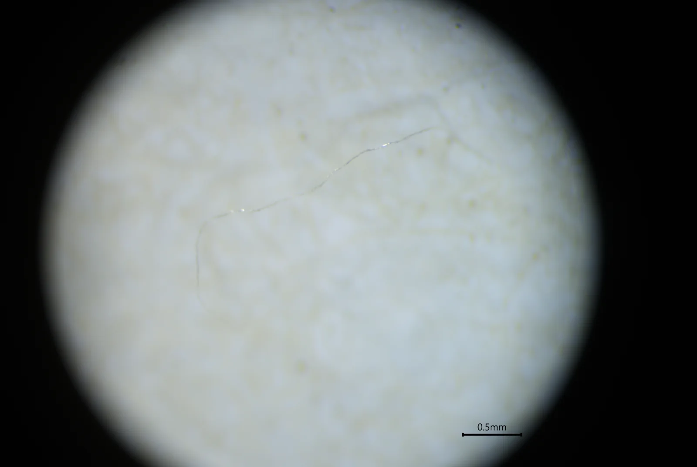
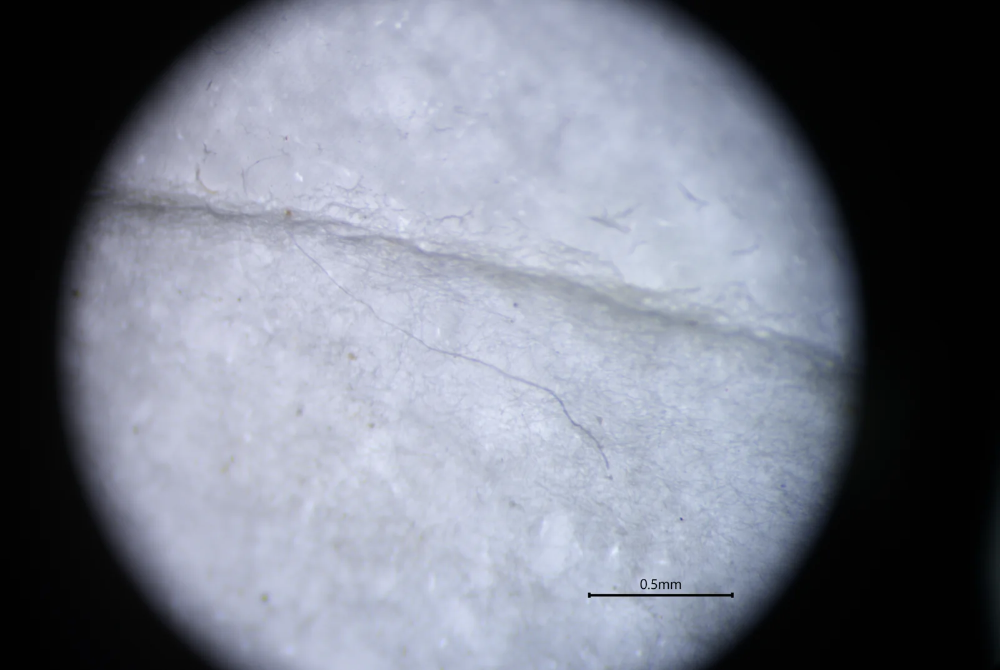
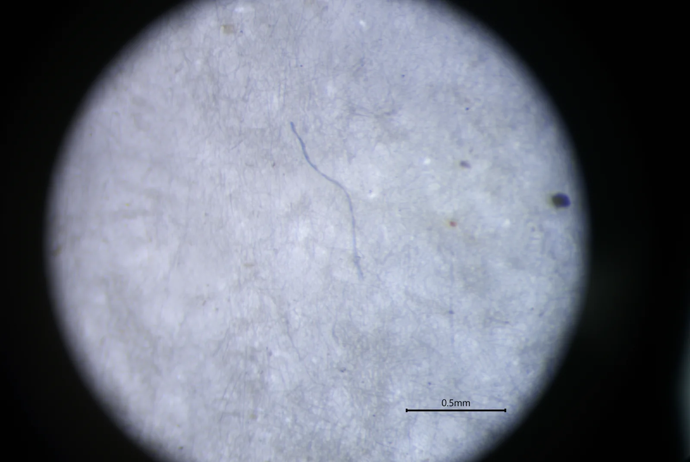
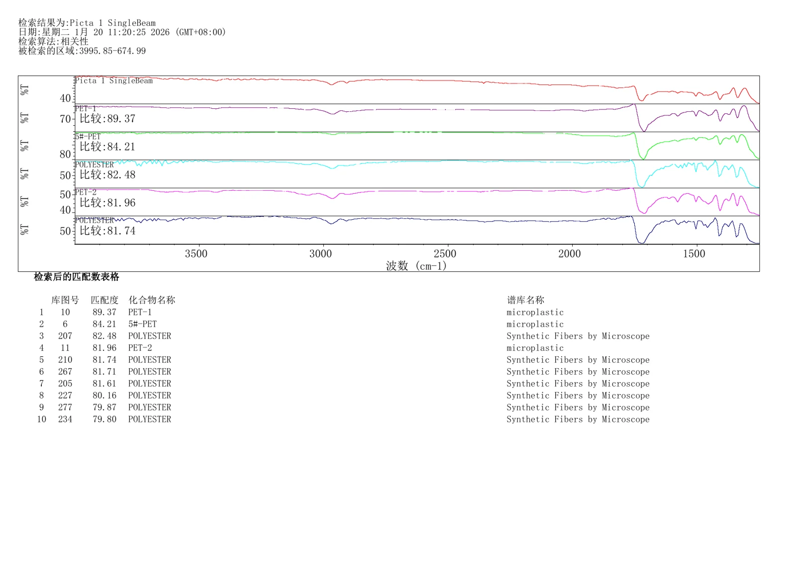
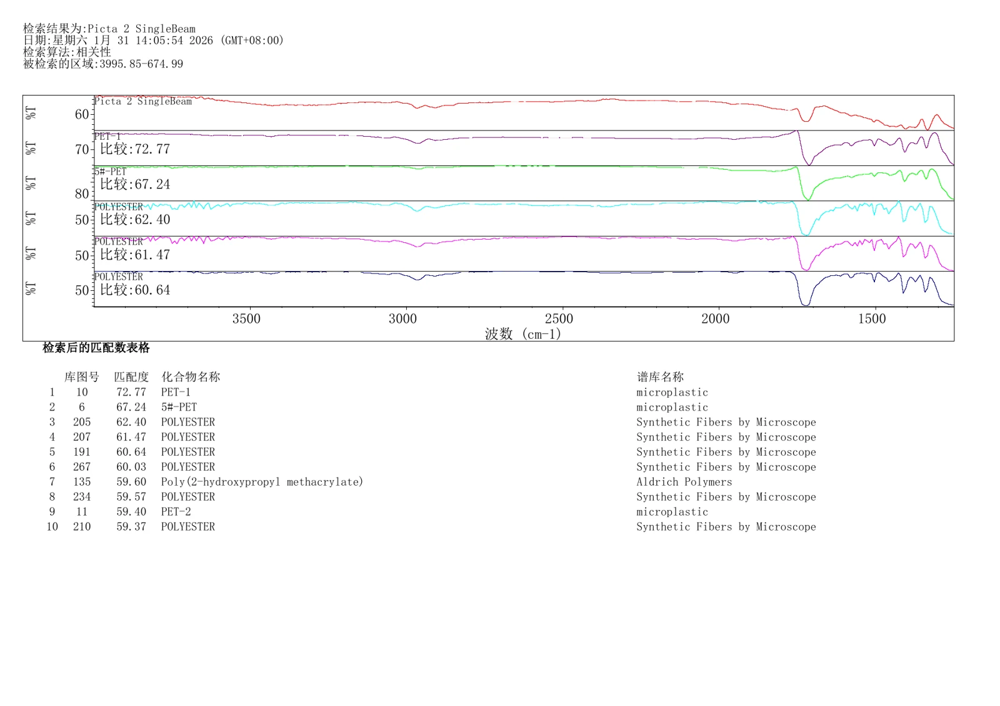
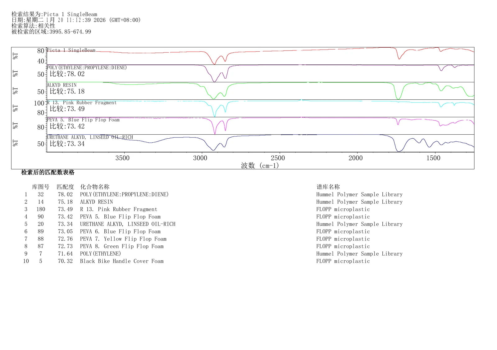
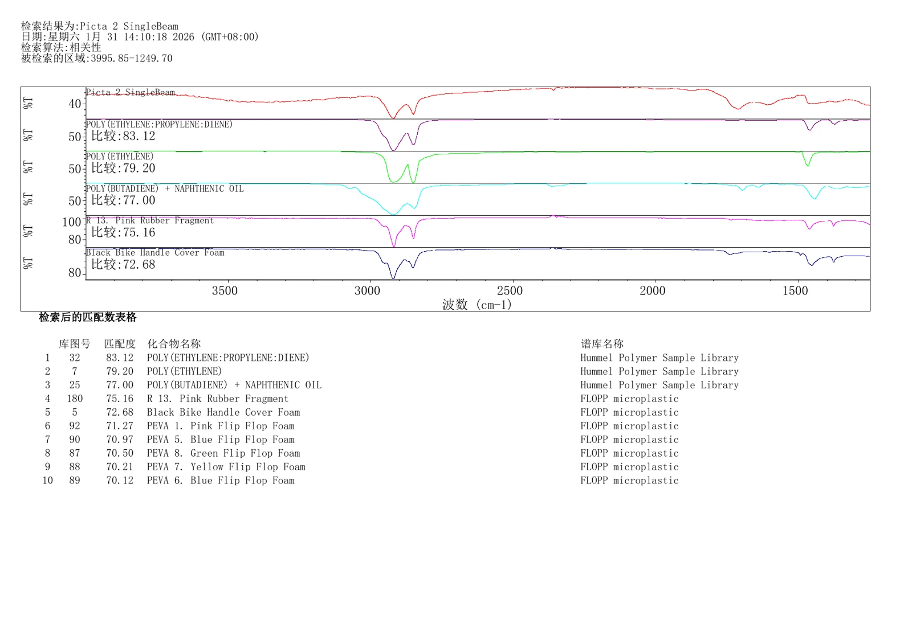

样品前处理
针对水样与土壤等环境基质进行消解、分离、过滤与颗粒富集。
面向环境微塑料研究，提供样品前处理、颗粒筛查、显微形貌观察、粒径与纤维特征记录、FTIR 光谱采集及谱库匹配等科研检测支持。当前已有资料重点展示土壤与水样检测结果，并可拓展至复杂生物样本研究。
从样品前处理到显微筛查和光谱识别，建立面向环境样品的微塑料检测链路。
针对水样与土壤等环境基质进行消解、分离、过滤与颗粒富集。
记录颗粒、碎片、薄膜及纤维等形貌特征，并结合比例尺进行尺寸评估。
采集目标颗粒光谱并进行聚合物谱库匹配，辅助确认材质类别。
形成代表性图像、谱图匹配结果及样本间对比，为后续暴露与来源研究提供数据基础。
以下模块用于展示已有环境样品检测资料；生物样本不在此处作为已验证数据展示。




现有资料中可见 PET / Polyester 等聚合物的高匹配结果，同时也出现 polyethylene 及橡胶/弹性体相关候选，用于辅助材质判定与进一步复核。




以下为可拓展的应用场景，用于微塑料暴露与生物分布研究；不作为当前页面中的既有实测数据表述。
面向循环系统微塑料暴露研究，可根据样本量与目标粒径设计富集和背景控制流程。
适用于排泄途径与暴露后迁移研究，重点关注低丰度颗粒回收与空白控制。
适用于组织内微塑料分布研究，需要结合组织消解、过滤富集与后续光谱确认。
适用于摄入暴露和排泄研究，可根据复杂有机基质优化消解、密度分离与颗粒筛查。
实际方案根据样品类型、目标粒径、颗粒丰度和研究问题调整。
明确水样、土壤或生物样本类型、样本量和研究目标。
消解、过滤、密度分离或其他适配流程。
定位颗粒并记录颜色、形貌、尺寸和纤维特征。
FTIR 等光谱采集与谱库检索，辅助确认聚合物类型。
输出代表图、谱图匹配、分类信息和科研数据说明。
检测方案、技术路线与数据分析咨询，请添加技术企业微信。
 添加时建议备注：官网专题 + 单位 + 研究方向
添加时建议备注：官网专题 + 单位 + 研究方向样品、检测项目、送样、报价、合同与进度需求，请添加表征/耗材企业微信。
 建议准备：样品类型 · 数量 · 目标粒径/材质 · 期望周期
建议准备：样品类型 · 数量 · 目标粒径/材质 · 期望周期